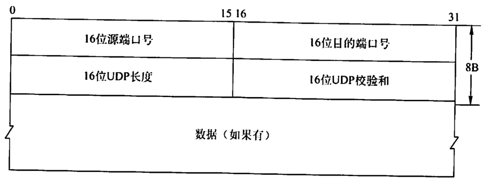
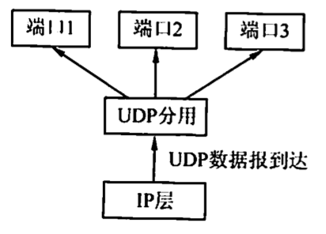
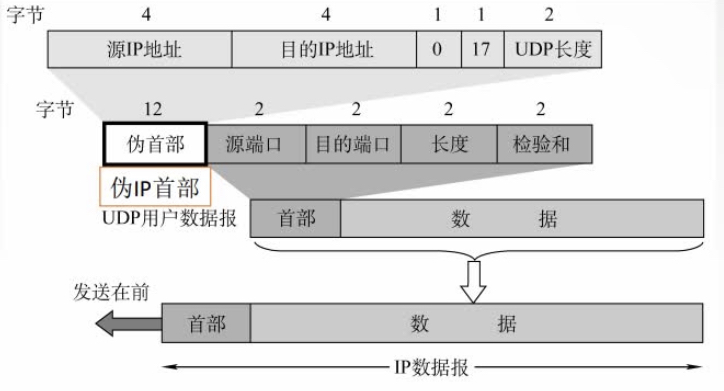
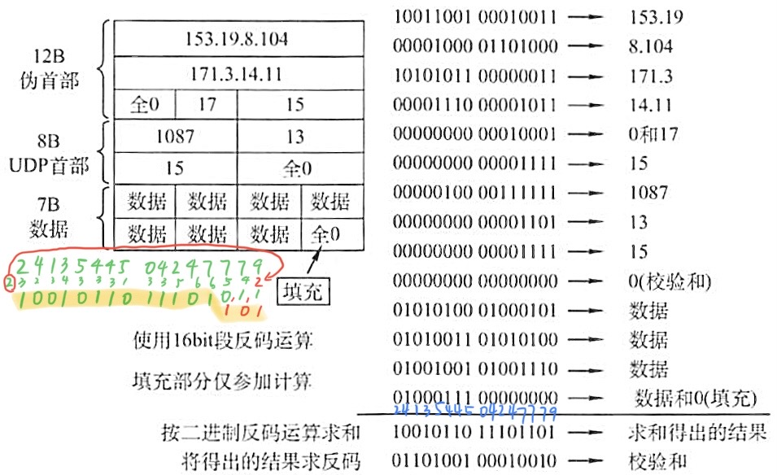

2022.11.03
[toc]
UDP仅在IP的数据报服务之上增加了两个最基本的服务：复用和分用以及差错检铡。如果应用开发者选择UDP而非TCP,那么应用程序几乎直接与IP打交道。为什么应用开发者宁愿在UDP之上构建应用，也不选择TCP？既然TCP提供可靠的服务，而UDP不提供，那么TCP总是首选吗？答案是否定的，因为有很多应用更适合用UDP,主要因为UDP具有如下优点：
1）UDP无须建立连接。因此UDP不会引入建立连接的时延。试想如果DNS运行在TCP而非UDP上，那么DNS的速度会慢很多。HTTP使用TCP而非UDP,是因为对于基于文本数据的Web网页来说，可靠性是至关重要的。
2）无连接状态。TCP需要在端系统中维护连接状态。此连接状态包括接收和发送缓存、拥塞控制参数和序号与确认号的参数。而UDP不维护连接状态，也不跟踪这些参数。因此，某些专用应用服务器使用UDP时，一般都能支持更多的活动客户机。
3）分组首部开销小。TCP有20B的首部开销，而UDP仅有8B的开销。
4）应用层能更好地控制要发送的数据和发送时间。UDP没有拥塞控制，因此网络中的拥塞不会影响主机的发送效率。某些实时应用要求以稳定的速度发送，能容忍一些数据的丢失，但不允许有较大的时延，而 UDP 正好满足这些应用的需求。
5）UDP 支持一对一、一对多、多对一和多对多的交互通信。
UDP常用于一次性传输较少数据的网络应用，如DNS、SNMP等，因为对于这些应用，若采用 TCP，则将为连接创建、维护和拆除带来不小的开销。UDP 也常用于多媒体应用（如卫星电话、实时视频会议、流媒体等），显然，可靠数据传输对这些应用来说并不是最重要的，但 TCP的拥塞控制会导致数据出现较大的延迟，这是它们不可容忍的。
UDP不保证可靠交付，但这并不意味着应用对数据的要求是不可靠的，所有维护可靠性的工作可由用户在应用层来完成。应用开发者可根据应用的需求来灵活设计自己的可靠性机制。
UDP是面向报文的。发送方 UDP 对应用层交下来的报文，在添加首部后就向下交付给IP层，一次发送一个报文，既不合并，也不拆分，而是保留这些报文的边界；接收方UDP对IP层交上来 UDP 数据报，在去除首部后就原封不动地交付给上层应用进程，一次交付一个完整的报文。因此报文不可分割，是UDP数据报处理的最小单位。因此，应用程序必须选择合适大小的报文，若报文太长，UDP 把它交给 IP层后，可能会导致分片：若报文太短，UDP 把它交给IP层后，会使IP数据报的首部的相对长度太大，两者都会降低IP层的效率。
UDP 数据报包含两部分：UDP 首部和用户数据。UDP 首部有 8B，由4个字段组成，每个字段的长度都是 2B。各字段意义如下： 1）源端口。源端口号。在需要对方回信时选用，不需要时可用全0。 2）目的端口。目的端口号。这在终点交付报文时必须使用到。 3）长度。UDP数据报的长度（包括首部和数据），其最小值是8（仅有首部)。 4）校验和。检测 UDP 数据报在传输中是否有错。有错就丢弃。该字段是可选的，当源主机不想计算校验和时，则直接令该宇段为全0。

当传输层从IP层收到UDP数据报时，就根据首部中的目的端口，把UDP数据报通过相应的端口上交给应用进程。
如果接收方UDP发现收到的报文中的目的端口号不正确（即不存在对应于端口号的应用进程)，那么就丢弃该报文，并由ICMP发送“端口不可达”差错报文给发送方。
收到UDP数据报 $\to$ 检查目的端口号 $\to$ 正确则上交，错误发送ICMP“端口不可达”差错报文

在计算校验和时，要在UDP数据报之前增加12B的伪首部，伪首部并不是UDP的真正首部。只是在计算校验和时，临时添加在UDP数据报的前面，得到一个临时的UDP数据报。校验和就是按照这个临时的UDP数据报来计算的。伪首部既不向下传送又不向上递交，而只是为了计算校验和。


在发送端： 1.填上伪首部 2.全0填充检验和字段 3.全0填充数据部分(UDP数据报要看成许多4B的字串接起来） 4.伪首部＋首部＋数据部分采用二进制反码求和 5.把和求反码填入检验和字段 6.去掉伪首部，发送
在接收端： 1.填上伪首部 2.伪首部＋首部＋数据部分采用二进制反码求和 3.结果全为1则无差错，否则丢弃数据报/交给应用层附上出差错的警告。
【答案】：不能，因为两次重传的IP数据包标识符不同。
A.UDP校验和段的使用是可选的，若源主机不想计算校验和，则该校验和段应为全0
B.在计算校验和的过程中，需要生成一个伪首部，源主机需要把该伪首部发送给目的主机
C.如果数据报在传输过程中被破坏，那么就把它丢弃
D.UDP数据报的伪首部包含了IP地址信息
A.不记录数据的长度
B.只记录首部的长度
C.只记录数据部分的长度
D.包括首部和数据部分的长度
【答案】：B，校验字段全0代表不需校验，如果校验位全0，就填写全1
细节总结
- UDP首部开销为8B。4个2B(源端口，目的端口，长度，校验和)
- UDP长度字段是首部+数据。最短8B，只包含数据。
- UDP首部长度以1B为单位。（TCP首部长度4B为单位）
- UDP = IP + 复用分用 + 差错检测。
- UDP面向报文，不分片。
- 伪首部（12B）仅在计算校验和中使用。
- 计算校验和采用反码求和，结果再求反码。
- 不计算校验和，校验和置全0。
- 计算校验和结果为0，校验和置全1。